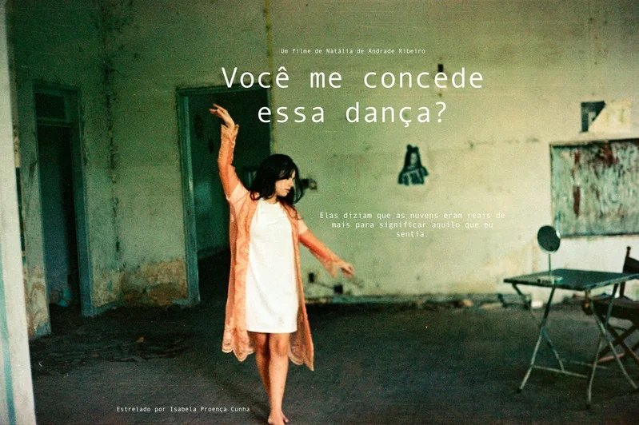

Curta-metragem · 2021
Você me concede essa dança?

Ver o projeto no BehanceO projeto
Em um restaurante, Lívia reencontra alguém do passado. Pequenas confusões nos diálogos revelam novas camadas dessa história.
Minha participação
Escrevi e desenvolvi o projeto durante a pandemia, assumindo direção, roteiro e edição, da concepção à finalização.
Fevereiro a junho de 2021